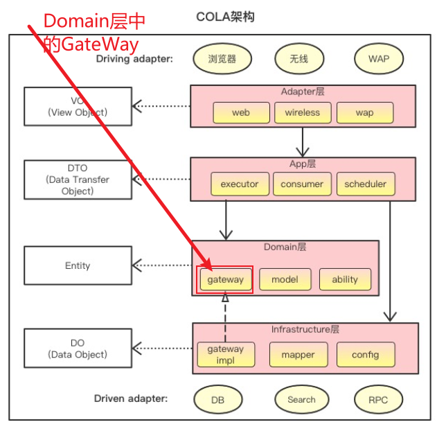

DDD踩坑记录
DDD踩坑记录
关于gateway的定位
这么一个场景：如果我们有多个领域，比如领域A和领域B，这两个领域都需要调用 同一个远程服务gateway 获取一些数据；那么这个gateway怎么处理？
- 是每一个领域下有一个单独的gateway？
- 是把gateway抽离出来，由多个领域都可以进行调用（那么这个gateway所在的领域是个什么定位呢）？
个人理解：
正常来说，按照COLA的架构，是每一个domain（每一个领域）有自己单独的gateway；但是从实际的开发角度来看，每一个领域有自己的gateway比较难以维护，因为如果多个领域调用同一个gateway，相当于这个gateway我要复制一份。
所以，综上考虑：还是选择第二种方案；就是抽离一个公共的model层，所有的gateway放在这里，有点类似于通用子域的概念；所有的领域都可以自由的调用model中的gateway；
（但是，从DDD的角度来说，还是每一个领域都有一个单独的gateway更合理一些）
查询条件太多，领域层入参怎么设计
这么一个场景：假设我们有申请单域，用户需求需要根据：申请时间起止+申请人+审批人+审批状态+···完成时间起止等很多的查询条件，查询出申请单列表；那么这个时候domainSerview的入参就得是好多好多。
纠结的点在于：如果我们这些查询条件封装成一个SO，传入domainSerview，但是这个SO和我的申请单域没有任何的关系；如果我把这些参数打平传进domainSerview，又太多了；怎么办呢？
结论先行：
- 封装成SO传入领域层；
为什么这么做？ 因为我们考虑到代码的可读性，不建议方法有大量的入参，那么至于SO和我的领域有没有关系，其实我觉得不重要，因为DDD的基本概念是领域建模，唯一的要求就是：领域内是干净的。不要和其他的领域耦合在一起。基于这个点考虑，领域内部创建一些无意义的值对象（SO可以看做是值对象），我认为是可以的，因为这些值对象方便了领域内的处理。同时领域对外暴露的命令：查询命令；
另外，如果有一些简单的查询，比如查询某个申请人的所有申请单，我们可以针对这个查询，在领域内单独抽出一个方法；
- searchBySO
- searchByApplier
一个领域怎么引用另一个领域？
比如说：domainService的入参可以是其他领域的聚合吗？在domainService内部可以调用另一个领域的服务呢？
- 不可以；
- 不可以；
如果一个领域A需要用到另一个领域B的对象的话，就把领域B的对象转成领域A中的对象；
//根据userid和权限id获取用户权限
User user = userDomainService.getUserPointPrivilegeChildrens(cmd.getUserId(), cmd.getPermissionId());
//将user权限转成指标维度
Dimension dimension = MetricAppFactory.userPrivilegeToDimension(user);
//调用指标域（因为User是用户域的，不能直接传给指标域，所以做一层转黄）
Metric metrics = metricDomainService.inTimeOrder(dimension);这个转换，需要是有意义的；比如上面的代码，将用户的权限转成了指标维度，这个转换并不是随便转的，因为每一个指标都会有一个维度的概念。
@Data
public class Metric {
/**
* 指标维度
*/
private Dimension dimension;
/**
* 首页指标: 订单量，入网量，签收量，，等等，所以是一个list
*/
private MetricIndex metricIndex;
/**
* 实时数据： 订单量，入网量，等指标vo
*/
private MetricInTime inTime;
/**
* 历史数据：
*/
private MetricHistory history;
}那么在domainService内部，可以调用另一个domainService吗？（换言之，一个领域服务怎么调用另一个领域服务）
在cola架构中，domain层中是有防腐层的概念的，
- 防腐层的包一般命名为acl
- 防腐层的类一般命名为XXXGateWay（通过依赖倒置原则，实现在基础设施层）
通过上面的概念，就可以理解，在一个领域中，一个领域服务调用另一个领域服务必须通过防腐层GateWay来调用，那么随之而来的几个问题：
- 1、如果需要调用的领域服务是本项目中其他领域的服务，也需要gateway吗？
- 是的。也需要，把本项目中其他领域的服务当做远程服务一样来调用；
- 2、如果本项目中有两个领域服务，需要调用远程同一个服务，gateway是在这两个领域服务下，每个领域服务中都创建一个gateway吗？即使这两个gateway代码完全一样？
- 是的，每个领域服务都需要创建GateWay，即使两个代码完全一样。
DO转PO的时候，是否需要填充所有的参数？
比如说，数据库中只存了站点id，但是实际的业务逻辑中，需要用到站点类型，在DO中存的是Site这个实体，那么在从PO到DO的过程中，也就是siteId到Site的过程中，是否需要通过SiteId获取Site的所有数据，然后放在DO中，还是说，只需要把siteId放在Site中，就可以了。
答案：需要获取所有的。1、获取PO对象；2、通过Factory一次性填充DO所有需要的属性。
领域服务(Domain Service)的定位
结论先行：领域服务的入参不必限制为必须是当前领域的聚合根；可以是多种多样的。
之前讨论领域服务是领域层很重要的概念，主要用来写业务逻辑，入参只能使用聚合根；目前来看，这种方式是错误的。比如下面的场景：在进出港业务中：是根据各种各样的扫描（分拨发件，到件，派件，签收，退件，转寄等），采集进港属性（应派信息，签收信息，分拨信息等）；那么就有下面两种方式：
- 目前的做法：将扫描放在进港域的聚合根(Inboard)中，进港的聚合根中包含了大量的扫描信息；
这样做的目的是为了保证进港的领域服务(InboardDomainService)的入参只能是进港聚合根(Inboard)，但是为了满足这个目的，缺引入了很多的缺点：
- 聚合根中引入了大量的无用扫描：为什么说是无用，因为进港聚合中只需要应派信息，签收信息，分拨信息，可是现在却不得不保存大量的扫描（退件，转寄，入库入柜等）；
- 各种各样的扫描进入到领域服务(inboardDomainServie)之后，还要再拆分，根据不同的扫描类型，进行不同的业务逻辑处理；代码庞大难以维护；
- 瞻仰一下目前的代码逻辑：这仅仅只是一部分而已
/**
* 设置应派信息：
* - 应派时间
* - 应派站点
*
* @param inboard : 前端传过来的
* @param preInboard : 数据库中的
*/
private void fillDispInfo(Inboard inboard, Inboard preInboard) {
DispInfo dispInfo = null;
SignInfo signInfo = null;
SendInfo sendInfo = null;
log.info("fillDispInfo inboard:{}, preInboard:{}", JSONUtil.toJsonStr(inboard),
JSONUtil.toJsonStr(preInboard));
if (Objects.nonNull(inboard.getSignInfo())) {
if (!preInboard.hasDispInfo() || DateUtil.dataAfter(inboard.getSignInfo().getScanTime(),
preInboard.getDispInfo().getScanTime())) {
//取签收站点作为应派站点
dispInfo = (!preInboard.hasDispInfo()) ? new DispInfo() : preInboard.getDispInfo();
//省略...设置了应派站点，应派站点的扫描事件，应派站点的结算站点 应派日期后面计算
}
if (!preInboard.hasSignInfo() || DateUtil.dataAfter(
preInboard.getSignInfo().getScanTime(), inboard.getSignInfo().getScanTime())) {
//取最早的签收， 最晚签收时间后面在计算, 签收时间是取最早的。
signInfo = inboard.getSignInfo();
}
} else if (BooleanUtils.isTrue(preInboard.isHasCenterScan())) {//之前过分拨
if (Objects.nonNull(inboard.getSendInfo())) {//当前扫描是发件扫描
if (inboard.getSendInfo().isEndCenterSend()) {
//分拨发件，并且下一站是站点， 主要是排除分拨发分拨的情况
if (!preInboard.hasDispInfo() || DateUtil.dataAfter(
inboard.getSendInfo().getScanTime(),
preInboard.getDispInfo().getScanTime())) {
//省略...设置应派信息：发件扫描，下一站是站点，就取下一站
}
if (!preInboard.hasSendInfo()
|| DateUtil.dataAfter(inboard.getSendInfo().getScanTime()
,preInboard.getSendInfo().getCenterSendTime())) {
//分拨发件信息，取当前最新的
sendInfo = (!preInboard.hasSendInfo()) ?
new SendInfo() :
inboard.getSendInfo();
//分拨发站点：采集分拨
if (Objects.nonNull(inboard.getSendInfo().getCenterSite())) {
//发件站点是分拨
} else {
//发件站点是一级站点
if (Objects.nonNull(preInboard.getSendInfo())
&& Objects.nonNull(preInboard.getSendInfo().getCenterSite())) {
//处理一级发二级的情况，分拨还是原来的。
}
}
}
}
} else {//过了分拨，但不是发件扫描，可能是到件，派件，转寄,退件等等,取当前扫描站点
if (inboard.hasArrInfo() && inboard.isHasCenterScan()) {
//如果当前是分拨到件扫描，取消应派站点的采集
if (preInboard.hasDispInfo()) {
//....
}
} else if (inboard.hasReturnInfo() && BooleanUtils.isTrue(
inboard.getReturnInfo().isHasReturn())) {
//退件也清空
if (preInboard.hasDispInfo()) {
//....
}
} else if (!preInboard.hasDispInfo() || (
Objects.nonNull(inboard.getCurrentScanInfo()) && DateUtil.dataAfter(
inboard.getCurrentScanInfo().getScanTime(),
preInboard.getDispInfo().getScanTime()))) {
//过了分拨，但不是发件扫描，可能是到件，派件，转寄等等,取当前扫描站点
//....
}
}
} else if (BooleanUtils.isTrue(inboard.isHasCenterScan())) {//当前过分拨
preInboard.setHasCenterScan(true);
if (Objects.nonNull(inboard.getSendInfo()) && inboard.getSendInfo()
.isEndCenterSend()) {//当前扫描是分拨发件扫描
if (!preInboard.hasSendInfo() || DateUtil.dataAfter(
inboard.getSendInfo().getScanTime(),
preInboard.getSendInfo().getCenterSendTime())) {
//分拨发件信息，取当前最新的
//....
//这里不会有丰网一级发二级的情况需要处理
//因为当前过分拨（不会是丰网一级，只有丰网分拨，和大网网点才是当前过分拨）
}
if (!preInboard.hasDispInfo() || DateUtil.dataAfter(
inboard.getSendInfo().getScanTime(), preInboard.getDispInfo().getScanTime())) {
//派件信息：取下一站
//....
}
}
}
if (Objects.nonNull(dispInfo)) {
//填充丰网应派
dispInfo.setFwDisp(dispInfo.getScanSite().isFwSite());
preInboard.setDispInfo(dispInfo);
}
if (Objects.nonNull(sendInfo)) {
preInboard.setSendInfo(sendInfo);
}
if (Objects.nonNull(signInfo)) {
preInboard.setSignInfo(signInfo);
}
log.info("计算应派日期前的inboard code {} inboard {}",inboard.getCode(), JSONUtil.toJsonStr(inboard));
//计算应派日期+最晚签收时间
if (Objects.nonNull(preInboard.getSendInfo()) && Objects.nonNull(preInboard.getDispInfo())) {
//这里的逻辑都是简化后的
String centerSiteCode = preInboard.getSendInfo().getCenterSite().getSfCode();
String dispSiteCode = preInboard.getDispInfo().getScanSite().getCode();
Date centerSendTime = preInboard.getSendInfo().getCenterSendTime();
if (StringUtils.isNoneBlank(centerSiteCode, dispSiteCode) && Objects.nonNull(centerSendTime)) {
List<SiteShixiaoPO> shixiaoPOList = //获取时效配置
//应派时间+最晚签收时间
if (CollectionUtils.isNotEmpty(shixiaoPOList)) {
fillOutDispAndLatestSignTime(shixiaoPOList, preInboard,centerSendTime);
}else {
//没有时效配置，要清空硬派日期和最晚签收日期
preInboard.getDispInfo().setDispTime(null);
if (Objects.nonNull(preInboard.getSignInfo())){
preInboard.getSignInfo().setLatestSignTime(null);
}
}
}
}
}上面的代码复杂并且难以维护，在重构的过程中，分析出，这种思路（指的是domainService的入参必须是领域的聚合根(Inboard)）应该是错误的；
然后去找理论支撑，在《中台架构与实现》P177看到对领域服务的定义：
如果一个业务行为由多个实体对象参与完成，我们就将这部分业务逻辑放在领域服务中实现；
领域服务与实体方法的主要区别是：实体方法完成单一实体自身的业务逻辑，是相对简单的原子业务逻辑；而领域服务则是由多个实体组合的相对复杂的业务逻辑。简单的说，我们之前理解的业务逻辑写在领域服务中，是比较片面的，因为业务逻辑的实现，是可以在实体中，和领域服务中；
- 业务逻辑
- 在实体中实现
- 在领域服务中实现
总结下来：领域服务的入参不必限制为必须是当前领域的聚合根；可以是多种多样的。有一个限制就是：在实体方法和领域服务中，避免直接调用其他聚合的领域服务或者直接应用其他聚合的实体和值对象（不要增加耦合）；但是并不是说不让引用，而是通过正确的方式引用（通过唯一标识，引用其他聚合）。
最后，我采用的比较靠谱的方案是：入参使用“唯一标识”，这里的唯一标识加了引号，意思是说：不一定是唯一标识，但是一定是简单类型。
//只有code和入网时间
Inboard inboard = InboardAppFactory.toInboard(msg);
//当前扫描站点，分拨下一站，扫描时间，扫描类型（内部）
long scanSiteId = InboardAppFactory.toScanSiteId(msg);
long nextSiteId = InboardAppFactory.toNextSiteId(msg);
Date scanTime = InboardAppFactory.toScanTime(msg);;
InboardInnerScanTypeEnum inboardInnerScanTypeEnum = InboardAppFactory.toInnerScanType(msg.getScanDto().getScanTypeId());
//创建或者更新进港单(入参使用简单类型)
Inboard afterInboard = inboardDomainService.processScanMsg(inboard,scanSiteId,nextSiteId,scanTime,inboardInnerScanTypeEnum);